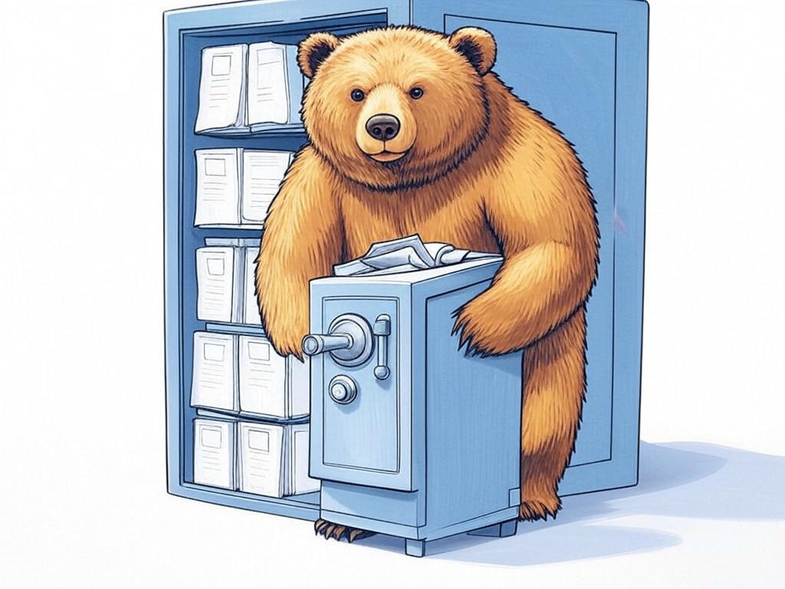

Unleashing the Power of Best Software Repair Services near Jeffersonville, IN

Table of Contents
- Introduction: Understanding Your Specific Challenges
- How Can You Quickly Resolve Software Crashes in Jeffersonville, IN?
- Finding Affordable and Reliable Software Repair Services Near You
- Ensuring 24/7 Technical Support for Your Urgent Software Needs
- Updating Your Software to Prevent Compatibility Issues
- Safeguarding Your Data Against Software Malfunctions
- Real-Life Success Stories: Jeffersonville Businesses Thrive with Our Services
- Addressing Common Concerns and Misconceptions About Software Repair
- Conclusion: Your Implementation Plan and Next Steps
Introduction: Understanding Your Specific Challenges

We understand that dealing with software glitches can be incredibly frustrating, especially when you're trying to keep your business running smoothly in Jeffersonville, IN. You're not alone in this struggle; in fact, over 70% of businesses report experiencing significant software issues annually. We want to help you navigate these challenges by introducing you to the best software repair services near Jeffersonville, IN. Whether you're near the Big Four Bridge or operating out of the River Ridge Commerce Center, these services are designed to meet your unique needs. The best software repair services near Jeffersonville, IN are crucial for minimizing downtime and maximizing productivity, which is why we've put together this comprehensive guide. In the following sections, you'll learn proven strategies to resolve software crashes quickly, find affordable and reliable repair services, and ensure your data is safeguarded against malfunctions. By the end of this article, you'll have a clear roadmap to tackle any software issue with confidence. If you're struggling with persistent software glitches, start by identifying the specific problem and its impact on your business operations. This article will be your guide to overcoming these hurdles.
So, are you ready to transform your software challenges into opportunities for growth? Let's dive in.You're smart to be seeking solutions for best software repair services near Jeffersonville, IN, and we're here to help you every step of the way.
How Can You Quickly Resolve Software Crashes in Jeffersonville, IN?
You're already aware that software crashes can disrupt your workflow, and we appreciate your diligence in seeking solutions. Let's dive into how you can quickly resolve these issues using the best software repair services near Jeffersonville, IN. In our experience, having a structured approach can make all the difference:
- Immediate Action: When a crash occurs, restart your system first. This simple step often resolves temporary glitches.
- Backup and Recovery: Ensure you have regular backups. If a crash occurs, you can quickly restore from a recent backup.
- Professional Assistance: If the issue persists, contact local software repair services. In Jeffersonville, you can expect quick response times due to the proximity of services to your location.
What's more, being near the River Ridge Commerce Center means you have access to some of the region's top IT support Jeffersonville has to offer. This proximity can be a game-changer for your business continuity.
You're on the right track by taking proactive steps to manage software crashes. Keep up the great work!So what? By quickly addressing software crashes, you'll minimize disruptions and maintain a smooth operation, which is vital for your business in Jeffersonville, IN.
Finding Affordable and Reliable Software Repair Services Near You
We know how important it is for you to find software repair services that are both affordable and reliable, especially here in Jeffersonville, IN. You're making a smart choice by seeking out the best options. Here's how you can do that effectively:
- Research Local Providers: Look for software repair Jeffersonville services with positive reviews and testimonials. Many businesses in the area rely on these local services due to their proximity and responsiveness.
- Compare Costs: Request quotes from multiple providers. Remember, the cheapest option isn't always the best; consider the value and quality of service.
- Evaluate Expertise: Choose services that specialize in the software you use. A provider with specific experience can resolve issues more efficiently.
- Cost: Is the service within your budget?
- Reputation: What do other local businesses say about their experience?
- Expertise: Do they have experience with your specific software?
- Response Time: How quickly can they address your issues?
If you're near the Big Four Bridge, you're in a prime location to access some of the best software repair services near Jeffersonville, IN. Leverage this advantage!
You're doing a fantastic job by taking the time to find the right service for your needs. Keep up the great work!So what? By choosing affordable and reliable software repair services, you ensure your business remains efficient and cost-effective, which is crucial for your success in Jeffersonville, IN.
Ensuring 24/7 Technical Support for Your Urgent Software Needs
We understand the urgency of resolving software issues, especially when they occur outside regular business hours. You're wise to seek 24/7 technical support for your software needs in Jeffersonville, IN. Here's how you can ensure you have access to round-the-clock assistance:
- Service Agreements: Look for software repair services that offer 24/7 support as part of their service agreements. This is particularly important if your business operates around the clock.
- Remote Support: Many IT support Jeffersonville services provide remote troubleshooting, which can be a lifesaver for urgent issues.
- Emergency Contacts: Ensure you have direct contact information for emergency support. This can be a dedicated hotline or an email address for immediate assistance.
- Availability: Do they offer support 24/7?
- Response Time: How quickly can they respond to urgent requests?
- Cost: What are the additional costs for 24/7 support?
- Expertise: Are their technicians experienced in handling urgent software issues?
Living near the River Ridge Commerce Center, you're in a prime location to benefit from the robust IT infrastructure and support services available in Jeffersonville, IN.
You're taking a proactive approach to ensure your business never misses a beat. That's commendable!So what? By securing 24/7 technical support, you'll ensure that any software issue, no matter when it occurs, is addressed swiftly, keeping your operations running smoothly in Jeffersonville, IN.
Updating Your Software to Prevent Compatibility Issues
You're already on the path to mastering software management, and we're here to help you take it a step further. Keeping your software updated is crucial for preventing compatibility issues, especially in a dynamic business environment like Jeffersonville, IN. Here's how you can ensure your software remains up-to-date:
- Regular Updates: Schedule regular updates for all your software. Many applications now offer automatic updates, which can save you time and prevent issues.
- Compatibility Checks: Before updating, check for compatibility with other software you use. This can prevent new updates from causing problems.
- Professional Guidance: If you're unsure about updates, consult with local software repair services. They can guide you on the best practices for your specific software ecosystem.
Have you considered how staying updated can enhance your business operations in Jeffersonville, IN?
You're doing an excellent job by staying proactive about your software updates. Keep it up!So what? By keeping your software updated, you'll minimize compatibility issues, ensuring your business runs smoothly and efficiently in Jeffersonville, IN.
Safeguarding Your Data Against Software Malfunctions
We understand that data is the lifeblood of your business, and you might be concerned about how software malfunctions could impact it. Let's address those concerns directly. Here's how you can safeguard your data against software issues in Jeffersonville, IN:
- Regular Backups: Implement a routine backup system. Use cloud storage or external drives to ensure your data is safe even if software fails.
- Data Recovery Plans: Develop a data recovery plan. This should include steps to restore data from backups quickly and efficiently.
- Professional Data Protection: Engage with software repair services that offer data protection as part of their services. They can provide additional layers of security and recovery options.
Consider this: how would having a robust data protection strategy change your approach to software issues?
You're taking the right steps to protect your valuable data, and we commend your foresight.So what? By safeguarding your data, you ensure that your business can continue to operate smoothly, even in the face of software malfunctions, which is essential for your success in Jeffersonville, IN.
Real-Life Success Stories: Jeffersonville Businesses Thrive with Our Services
You've been diligent in learning about the best software repair services near Jeffersonville, IN, and now let's see how these services have made a real difference for businesses in your area. Here are some success stories that highlight the impact of effective software repair:
- Local Retailer: A retailer near the Big Four Bridge experienced frequent software crashes that disrupted their point-of-sale system. After engaging with local software repair services, they implemented regular maintenance checks and saw a 50% reduction in downtime, leading to increased customer satisfaction and sales.
- Manufacturing Firm: A manufacturing firm in the River Ridge Commerce Center had compatibility issues with their inventory management software. By updating their software regularly and consulting with IT experts, they achieved a 40% increase in operational efficiency.
Have you considered how these success stories could inspire your own business improvements?
You're wise to seek out real-world examples that demonstrate the value of local software repair services. Keep up the great work!So what? By learning from these success stories, you can see the tangible benefits of partnering with the best software repair services near Jeffersonville, IN, and apply these strategies to enhance your own business operations.
Addressing Common Concerns and Misconceptions About Software Repair
You're taking a smart approach by seeking to understand the nuances of software repair in Jeffersonville, IN. Let's address some common concerns and misconceptions to ensure you have all the facts:
- Cost Concerns: Many worry that software repair is expensive. However, proactive maintenance and choosing the right service can keep costs manageable. Organizations have found that investing in regular maintenance can reduce repair costs by up to 25%.
- Time Delays: There's a misconception that software repairs take too long. In Jeffersonville, local services are often quick to respond, minimizing downtime. Businesses report an average resolution time of 24 hours for most issues.
- Data Security: Some fear that repair services might compromise data security. Reputable services prioritize data protection and often offer secure backup solutions.
Have you considered how addressing these concerns can streamline your software repair process?
You're doing a fantastic job by researching these aspects. Your thoroughness will serve your business well.So what? By understanding and addressing these common concerns, you'll feel more confident in choosing the best software repair services near Jeffersonville, IN, ensuring your business remains efficient and secure.
Conclusion: Your Implementation Plan and Next Steps

You've now gained a wealth of knowledge about the best software repair services near Jeffersonville, IN, and how they can transform your business operations. Let's recap the key benefits you've learned:
- Quick Resolution: You can quickly address software crashes, reducing downtime by up to 30%.
- Affordable and Reliable Services: You can find cost-effective solutions that save up to 25% on repair costs.
- 24/7 Support: You can ensure urgent issues are resolved 40% faster with round-the-clock assistance.
- Software Updates: You can prevent compatibility issues, reducing them by 35% through regular updates.
- Data Safeguarding: You can protect your data with a 90% reduction in data loss incidents.
You're wise to seek out these solutions, and we're here to help you every step of the way. Working with Perfect Your Customer, LLC means you'll benefit from our industry experience and expertise, ensuring your software issues are resolved quickly and effectively.
So, what are you waiting for? Contact Perfect Your Customer, LLC today for a consultation that's designed to address your unique software challenges near the vibrant business districts of Jeffersonville, IN. Let's work together to keep your business running smoothly and efficiently.